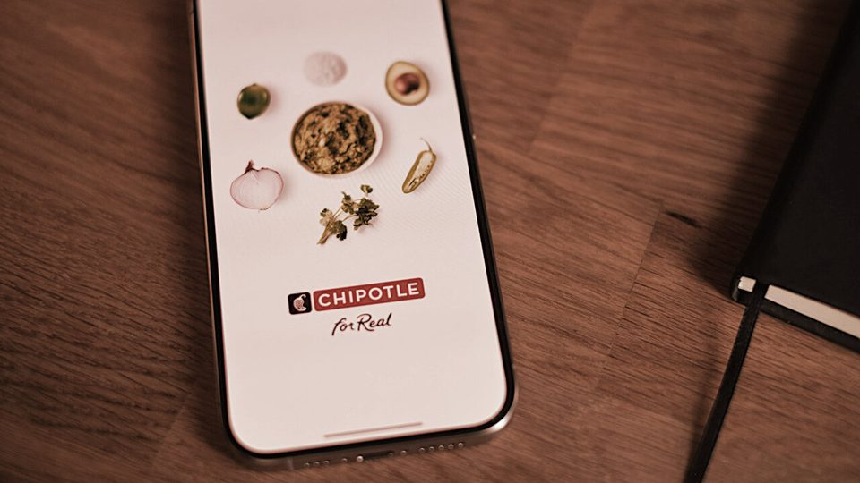
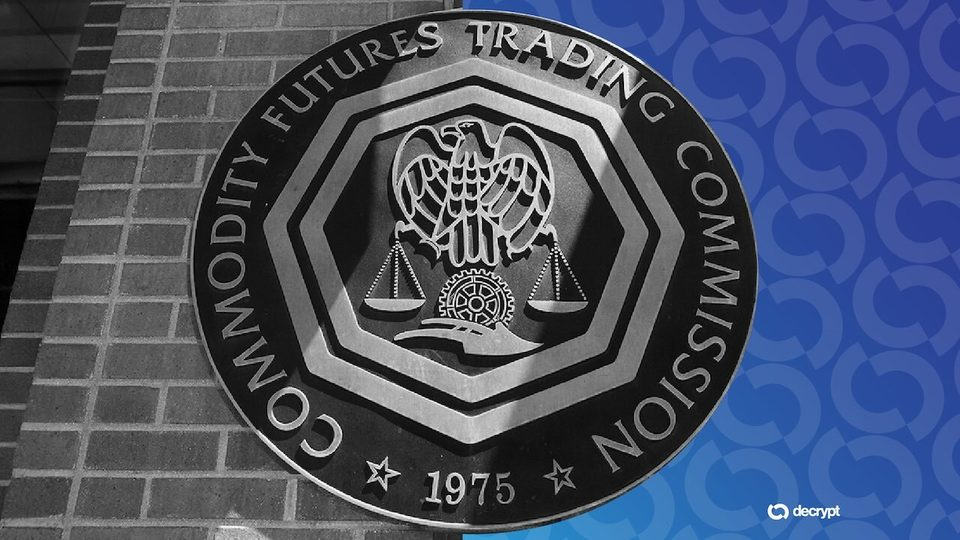
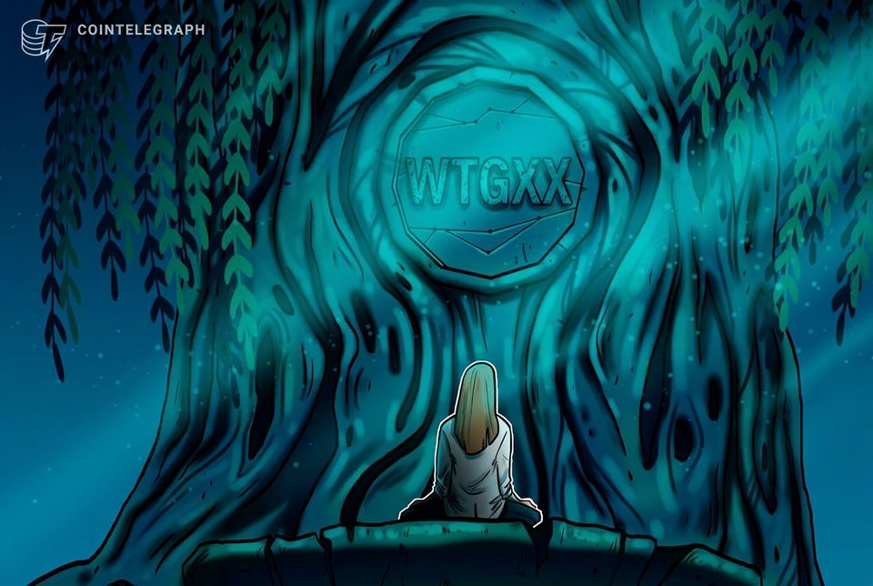

September 17, 2026
Daily headline set with source diversity, cleaned links, and local static rendering.
Security Experts Want the US and China to Promise Never to Let AI Control Nukes
Brookings researchers in the US and China are urging Washington and Beijing to agree to keep humans in control of nuclear weapons.
After Congress killed its landmark crypto bill, the SEC unlocked the $77 trillion US stock market through tokenization
The US Securities and Exchange Commission (SEC) has opened a five-year pathway for regulated US stocks to trade on blockchain-native venues. The Innovation Exemption came two days after the Senate failed to advance the...

Here's what happened in crypto today
Need to know what happened in crypto today? Here is the latest news on daily trends and events impacting Bitcoin price, blockchain, DeFi, Web3 and crypto regulation.
Clarity Act failure may hamper U.S. crypto as industry seeks legal clarity elsewhere
Clarity Act failure may hamper U.S. crypto as industry seeks legal clarity elsewhere

Why Is Chipotle Now Working With the CIA-Funded Palantir?
Chipotle is piloting a Palantir-built food safety dashboard after a summer of outbreaks, putting employee data in the hands of a company seeded by the CIA's venture arm.
Optimism just approved the upgrade its Superchain needs before interoperability can go live
Operators must update fault-proof services and withdrawal tooling before a targeted cutover, while users need no action. The post Optimism just approved the upgrade its Superchain needs before interoperability can go...
CFTC expands regulatory relief for passive trading software providers
The US regulator’s move could make it easier for crypto wallets and other apps to offer access to regulated derivatives and prediction markets without registering as introducing brokers.
Ratings giant S&P Global acquires OpenZeppelin in tokenized finance risk push
Ratings giant S&P Global acquires OpenZeppelin in tokenized finance risk push

CFTC Opens Door for Crypto Apps to Offer Regulated Derivatives Access
In a no-action letter, the CFTC said certain software providers can connect users to regulated derivatives markets without registering as brokers.
Stellar activates Protocol 28 as network hits record throughput and RWA value climbs
The opt-in Soroban tools also ease data migrations, while raw-ledger systems must handle a new empty-ledger value. The post Stellar activates Protocol 28 as network hits record throughput and RWA value climbs appeared...

WisdomTree, MoonPay team up to expand US access to tokenized money market fund
MoonPay plans to use WisdomTree’s $1.2 billion WTGXX tokenized fund as part of its stablecoin reserves while helping expand access to US investors.
SEC rolls out long-awaited 'innovation exemption' for tokenized securities venues
SEC rolls out long-awaited 'innovation exemption' for tokenized securities venues